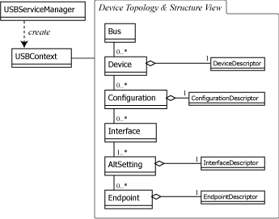

|
USB for Java | |||||||||
| 前のパッケージ 次のパッケージ | フレームあり フレームなし | |||||||||
参照先:
説明
| インタフェースの概要 | |
|---|---|
| AltSetting | UBS インターフェースの代替設定 (Alternate Setting) を表すインターフェースです。 |
| Bus | バスを表すインターフェースです。 |
| Configuration | デバイスのコンフィギュレーションを表すインターフェースです。 |
| Device | USB デバイスを表すインターフェースです。 |
| DeviceFilter | USB コンテキストからのデバイス検索時にフィルタリングを行うためのインターフェースです。 |
| Endpoint | エンドポイントを表すインターフェースです。 |
| Interface | USB のインターフェースを表すインターフェースです。 |
| USBContext | USB コンテキストを表すインターフェースです。 |
| USBService | USB サービスを提供するためのインターフェースです。 |
| クラスの概要 | |
|---|---|
| LangID | 文字列記述子の要求で使用する言語 ID を定義するクラスです。 |
| USB | USB 仕様で定義されている定数とユーティリティ機能を実装するクラスです。 |
| USB.Class | デバイスクラス及びインターフェースクラスを表すクラスです。 |
| USBServiceManager | 一連の USB サービスを管理するための基本的なサービスです。 |
| 例外の概要 | |
|---|---|
| IsochNoSentException | |
| NotImplementedException | 低レベル実装が操作を実装していない場合に発生する例外です。 |
| NotOpenException | リソースがオープンされていない場合に発生する例外です。 |
| ResourceBusyException | デバイスまたはインターフェースが他のタスクによって排他アクセスされている場合に発生する例外です。 |
| USBException | |
USB for Java のコアライブラリです。このパッケージは抽象化された USB 論理構造ビューとデバ イス操作を行うためのインターフェースで構成されています。プログラマが意識するオブジェクト構造は 以下の図のようになります。

usb4j を使用した一般的なデバイス操作は以下の手順となります。詳細はそれぞれのクラスの API リファレンスを参照してください。
USBServiceManager.getContext()USBContext.lookup()Device.open()Interface.claim()EndpointInterface.release()Device.close()USBContext.dispose()例として全てのデバイスのベンダー ID / 製品 ID を出力するコードは以下のように記述することが 出来ます。
USBSession session = USBServiceManager.getSession();
for(Device device: session.lookup()){
DeviceDescriptor desc = device.getDescriptor();
System.out.printf("%04X:%04X\n",
desc.getVendorId(), desc.getProductId());
}
session.release();
|
koiroha.org by takami torao | |||||||||
| 前のパッケージ 次のパッケージ | フレームあり フレームなし | |||||||||